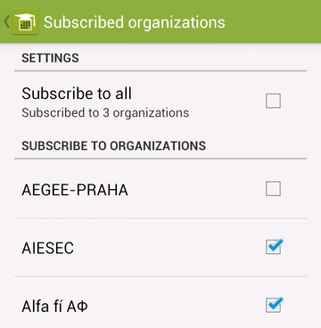

To access app settings, tap the wrench icon at the top panel (can be found in menu on older Android versions).
Here you can set events preferences.
You can manage reminder settings at Event reminding section to set events alarm reminding. E. g. if you set reminding 10 minutes before events start, you will be notified by alarm at 2:00 PM about event that starts at 2:10 PM.
By modifying Notify about new option you can manage new events notifications. This option is off by default. If you turn it on, you will be always notified in case new event is added.
 Here you can manage your student organizations preferences. You can set which organizations are you interested at and which organizations events you want to subscribe. By default, all organizations are subscribed. However, if you choose to subscribe to three organizations only, you will receive information about events arranged by these three organizations only.
These settings are similar to Subscribed organizations but it is applied to type of subscribed events.